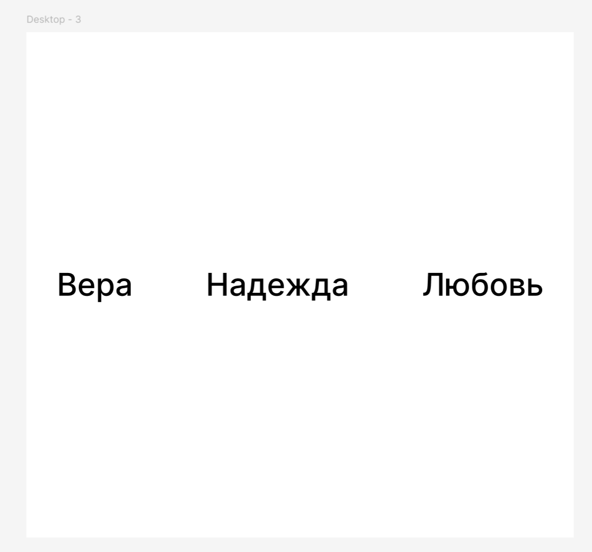
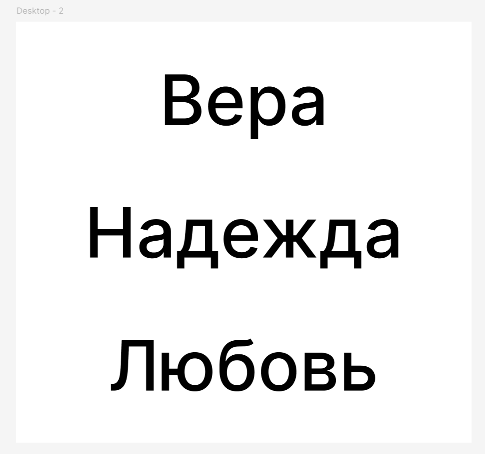
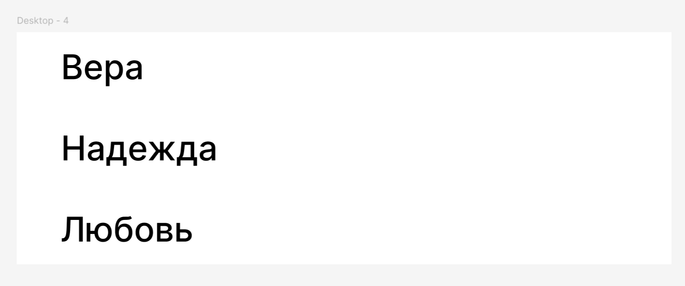
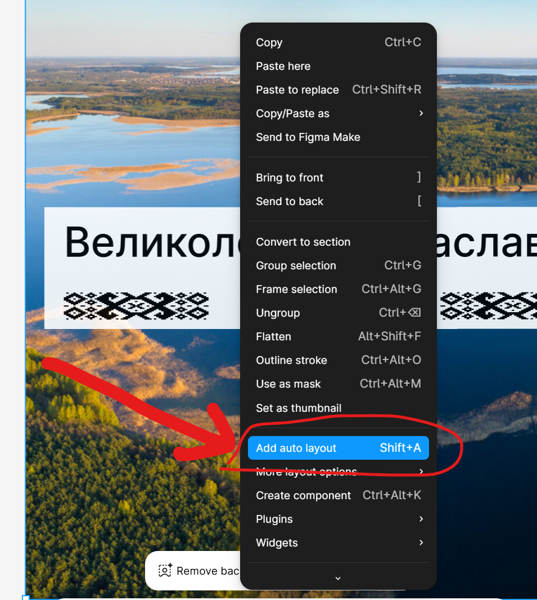
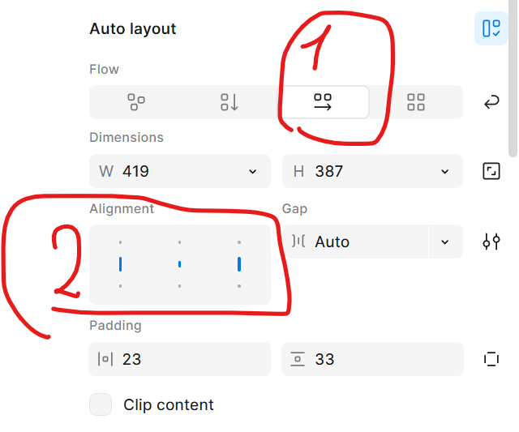

Повторить композиции
Композиция 1

Композиция 2

Композиция 3

Используй фичу Фигмы – Auto Layout:

Правой кнопкой мыши на холст/прямоугольник -> Add auto layout
Убедись, что у тебя правильно установлены главные первая и вторая настройки:
Панель справа -> Auto layout

Композиция 1
Вот знак тире: –
Цветочек справа и ёлку снизу - не надо добавлять.
Композиция 2

Картинки:


Текст:
Бра́славские озёра (бел. Бра́слаўскія азёры) — группа озёр на севере Беларуси в районе города Браслав. Они включают в себя десятки озёр общей площадью около 130 км² и объёмом, превышающим 540 млн м³. В основном озёра расположены в районе бассейна Друйки. Они соединены между собой маленькими речушками, ручьями и протоками[1]. Национальный парк был основан в 1995 году.